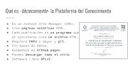
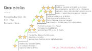

Plataformas de Conocimientos
 
Mostramos las condiciones y retos que propiciaron crear el software libre que construye el sitio web del IMPLAN Torreón. Así no fue un común sitio web gubernamental, sino que llegó a merecer reconocimientos nacionales por ser la plataforma que publica y ordena el conocimiento de la metrópoli.
Descargar
- Presentación Plataformas de Conocimientos archivo PDF.